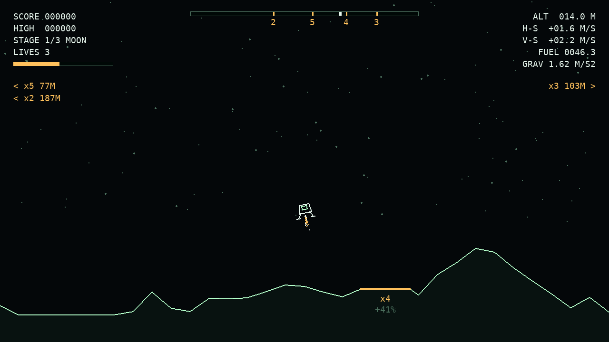

추력
착륙 시 수직과
12°
이내
중력
진입 속도
스테이지
달 → 화성 → 금성, 총
3
단계
목숨
게임 전체
3
개, 추락할 때마다 1개 감소
연료량
추력을 쓰면 줄어듦
빨리 착륙하면 다음 스테이지에
시간 보너스 연료
추가
착륙 인정 조건
횡방향(
H-S
)
3.5 m/s
이내,
수직방향(
V-S
) 하강 중
4.5 m/s
이내일 때만
착륙으로 인정
패드 위치 안내
상단 막대: 맵 전체의 패드(숫자 = 배율)와 내 위치(흰 눈금)
화면 가장자리: 화면 밖 패드의 방향 · 배율 · 거리
착륙 패드
두 발판이 모두 이 안에 닿아야 함
(
x4
= 점수 배율)